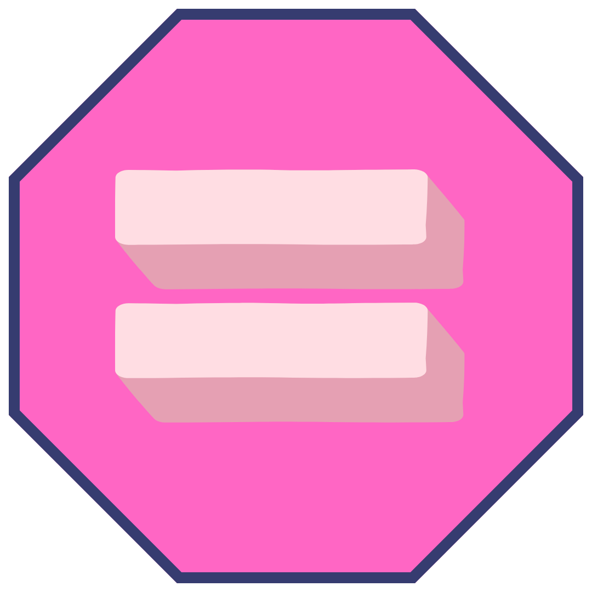
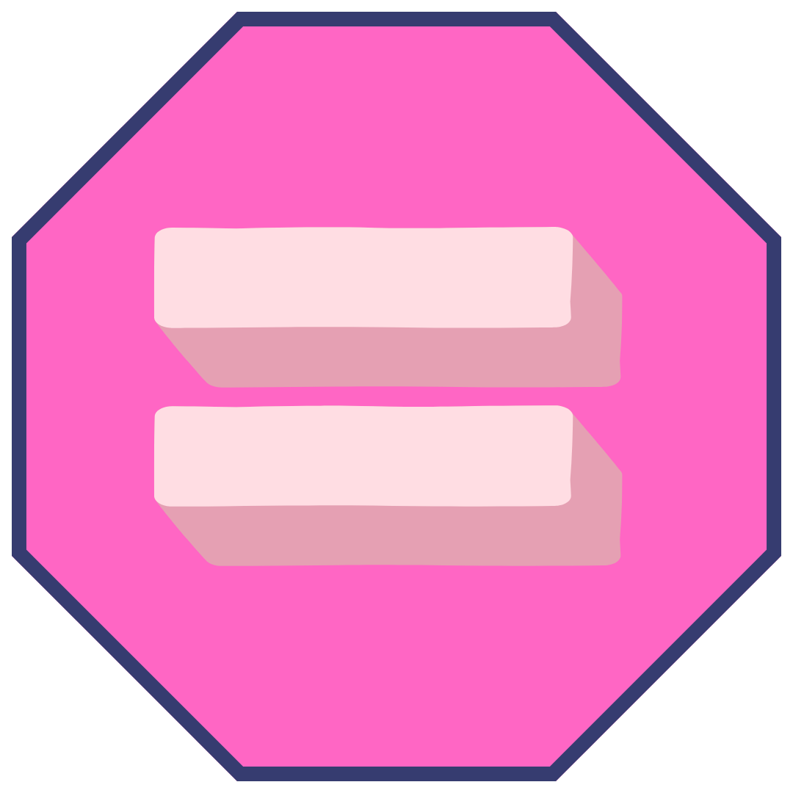

const loader = new THREE.GLTFLoader();
loader.load('dancing-character.glb', function(gltf) {
const model = gltf.scene;
scene.add(model);
// יצירת מיקסר להפעלת האנימציה
mixer = new THREE.AnimationMixer(model);
// מציאת האנימציה הראשונה והפעלתה
const animation = gltf.animations[0];
if (animation) {
const action = mixer.clipAction(animation);
action.play();
} else {
console.error('לא נמצאה אנימציה בקובץ ה-GLB.');
}
animate(); // הפעלת לולאת האנימציה
});
function animate() {
requestAnimationFrame(animate);
// עדכון זמן האנימציה
if (mixer) mixer.update(0.01);
renderer.render(scene, camera);
}